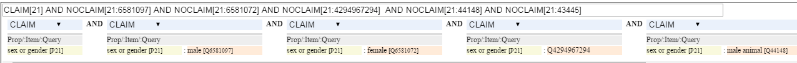

Sex or Gender?
Table of Contents
1 Intro
Sex –Question on a form
Lots! –Answer provided
While working on ULAN LOD, I wondered how should we map the ULAN field "sex".
So I did a small review of available LOD properties and values.
Everyone agrees on male/female but there are other values as well. Read the discussion on Wikidata prop sex or gender (P21) to learn more than you ever wanted on the topic, including the difference between sex and gender.
1.1 How Many in Wikidata?
How many Wikidata entities have gender but are neither male nor female? We can check with this cryptic query:
CLAIM[21] AND NOCLAIM[21:6581097] AND NOCLAIM[21:6581072] AND NOCLAIM[21:4294967294] AND NOCLAIM[21:44148] AND NOCLAIM[21:43445]
Use the WDQ Editor to "click a query", or paste the above query to figure out what it means. 
- the values that we exclude with NOCLAIM are (in order): male, female, unknown, male animal, female animal
- Wikidata distinguishes between human and animal males/females. If you skip the last 2 NOCLAIM, you can find out that both Laika (the first space dog) and Blondi (Hitler's dog) were female
Then invoke Autolist, add "Property: 21" and click Update to get a Gender column. Currently there are 163 humans that have gender neither male nor female. Eg
- the artist Jeffrey Catherine Jones is "transgender female";
- the author, poet, playwright, and theater artist S. Bear Bergman is "transgender male".
Now let's find out how many humans have a gender (excluding unknown, male animal, female animal). Since there's a lot, we use the WDQ API to just count, returning "noitems":
http://wdq.wmflabs.org/api?q=CLAIM[21] AND NOCLAIM[21:4294967294] AND NOCLAIM[21:44148] AND NOCLAIM[21:43445]&noitems=1
There are 2,516,099. So the ones neither male nor female are 0.0065% (6.5 promiles). This is quite low. But studies have shown that all authority lists (VIAF, Wikipedia, Wikidata) are strongly male-biased. So in a more harmonious future we should expect the percentage of records and articles about females and transgenders to increase.
2 Survey of Datasets
2.1 ULAN
The ULAN database field "sex" has these values:
- Male
- Female.
- Other: neither male nor female (eg hermaphrodite)
ULAN includes a few <named animals> under ulan:500353455, for which also male/female is used.
The following database values won't be used
- Transgender: will be replaced with Other
- Unknown: the default for loads, when gender is not indicated by the contributor or otherwise we do not know it. Will be skipped
- N/A: for corporate bodies. Will be skipped
2.2 AAT
ULAN refers to AAT for all sorts of concepts (person type, life event type, sex). The following concepts will be used (first two are under AAT concept Sex):
- aat:300189559 male
- aat:300189557 female
- aat:300400513 other
AAT also has a concept that won't be used
- aat:300389935 hermaphroditic "combining male and female characteristics".
2.3 FOAF and Schema
- foaf:gender is literal, with recommended values "male", "female" and "other values may be used, but are not enumerated here"
- schema:gender is literal, with no recommended values
2.4 RDA
The RDA termList/gender is now online at http://www.rdaregistry.info. It has these limited values:
- 1002 male
- 1001 female
- 1003 not known
I wonder what RDA would have to say about the aforementioned S. Bear Bergman (wd:Q185735, viaf:26494357).
2.5 Wikidata
Wikidata prop sex or gender (P21) has the most values:
- for persons: male (Q6581097), female (Q6581072), intersex (Q1097630), hermaphrodite (Q303479), transgender (Q189125), transgender female (Q1052281), transgender male (Q2449503), genderqueer (Q48270), fa'afafine (Q1399232), māhū (Q3277905), kathoey (Q746411), fakaleiti (Q350374), hijra (Q660882) ;
- for animals: male animal (Q44148) or female animal (Q43445)
I added two values: Hermaphrodite and Transgender:
- hermaphrodite (Q303479): described as "used for organisms with both 'male' and 'female' reproductive organs" and coreferenced to GND 4191351-6
- note: intersex (Q1097630) is described as "variation in sex characteristics that do not allow an individual to be distinctly identified as male or female". It's coreferenced to GND 4027484-6 "occurrence of male and female or intermediate characteristics in an individual of a single sex type", which has synonym Pseudo-hermaphroditism so it's not the same as Hermaphrodite
- transgender (Q189125): while there exist transgender male (Q2449503) and transgender female (Q1052281), ULAN doesn't have such distinction, so we need a "super-value" Transgender in addition to these two
3 Coreferencing
One can use the following coreferencing statements for male/female
@prefix aat: <http://vocab.getty.edu/aat/>. @prefix wd: <http://www.wikidata.org/entity/>. @prefix rdagn: <http://rdaregistry.info/termList/gender/>. aat:300189559 skos:exactMatch wd:Q6581097, rdaGender:1002. # male aat:300189557 skos:exactMatch wd:Q6581072, rdaGender:1001. # female